Вы попали в Таверну "перекресток мертвеца"

Удар мечом
Наносит рану мечом или длинным кинжалом, нанося 30 ед урона.

Поднять щиты за царя
Востанавливает 45 единиц брони, и наносит 15 ед урона в радиусе 2 метров.